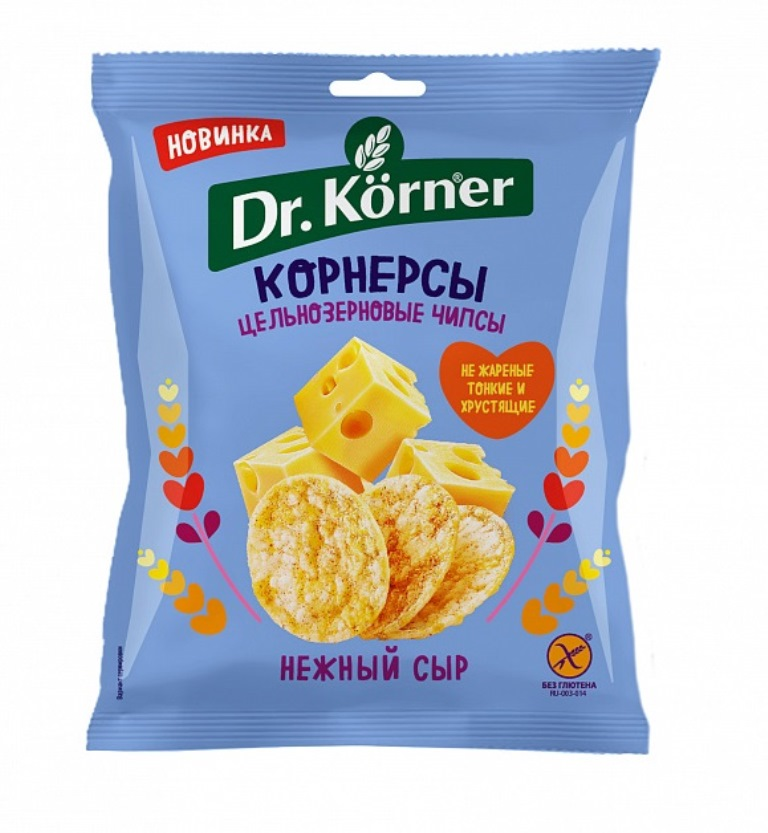
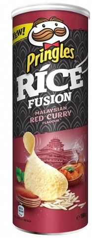
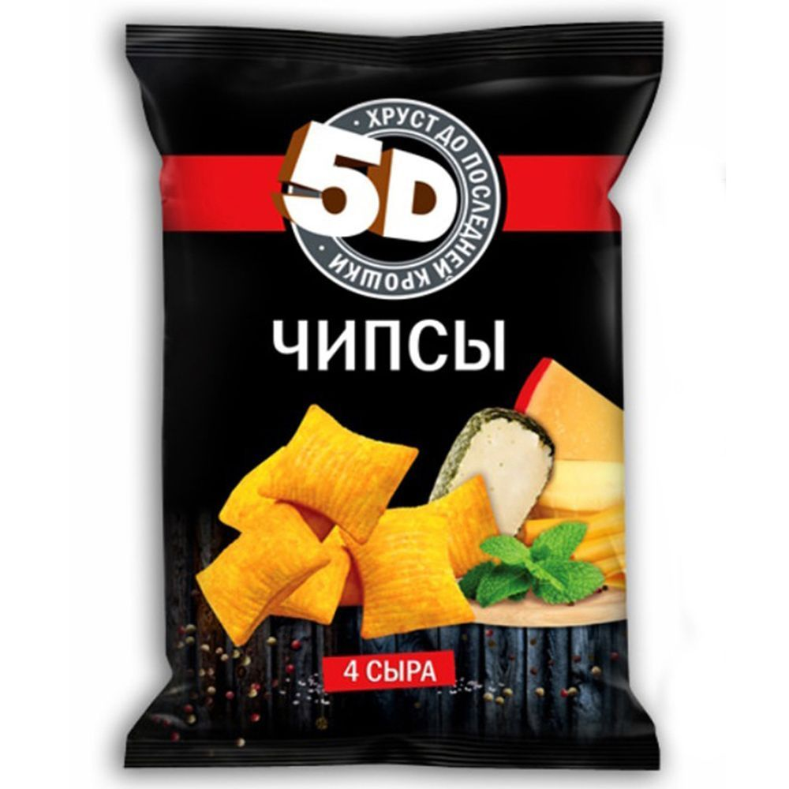
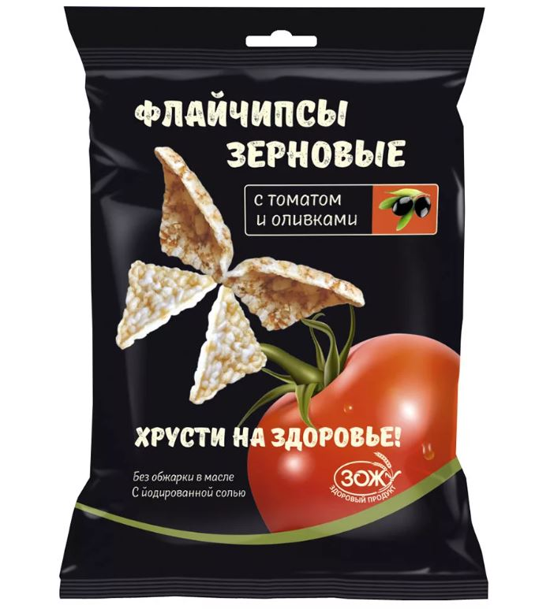
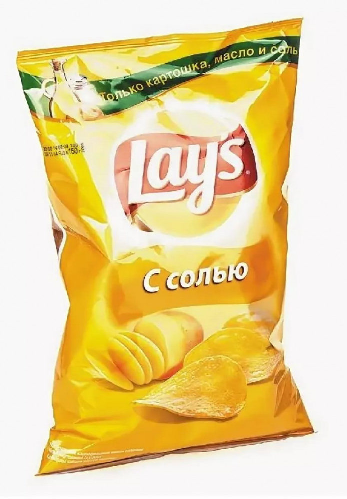
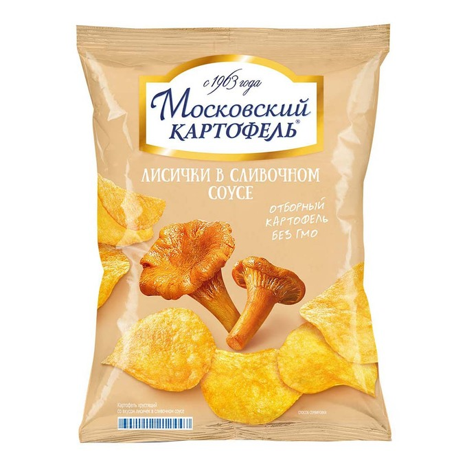
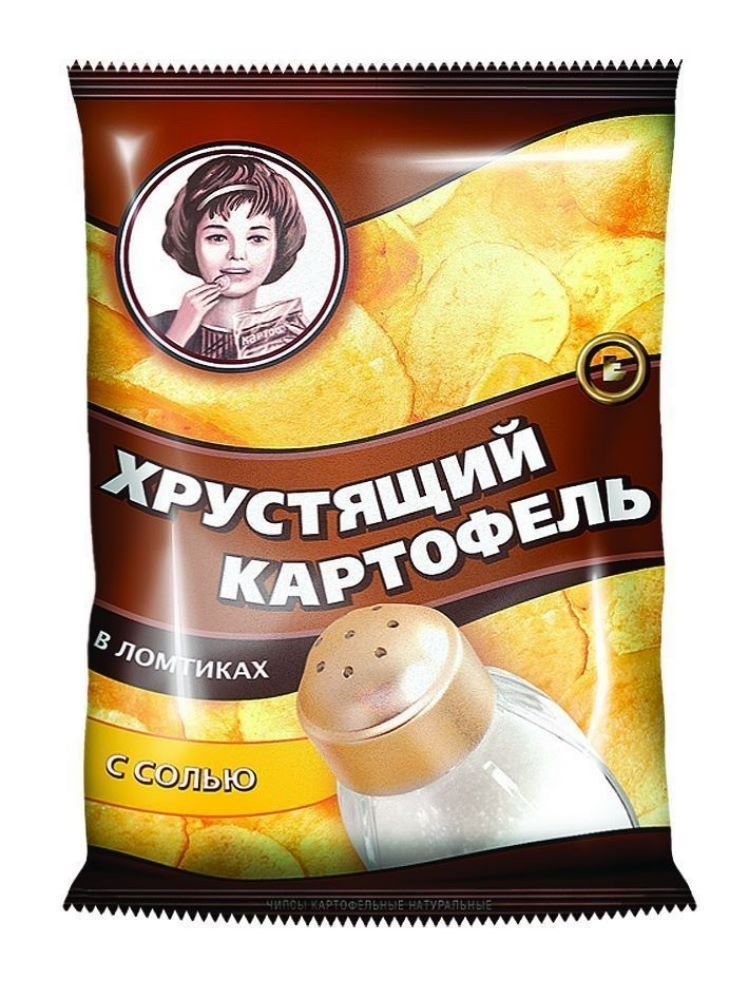
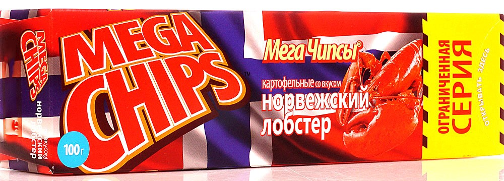
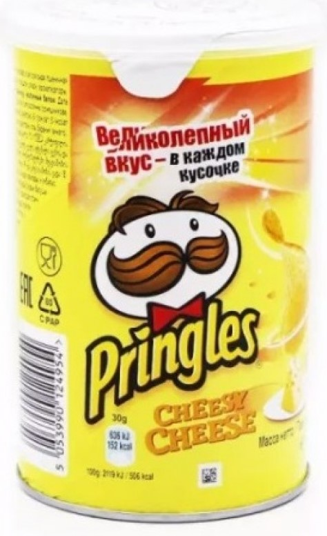

Рейтинг лучших чипсов России на 2022 год
Чипсы — достаточно сытный и недорогой продукт, который удобно брать с собой в качестве перекуса или добавлять в различные блюда. Главное — знать, на что обратить внимание при выборе, чтобы перекус был не только быстрым, но и полезным. В статье разберем, как делают чипсы, какие виды и вкусы существуют, какие лучшие производители представлены на рынке, а также какие ошибки при выборе можно совершить. Представим советы, как выбрать подходящие марки по цене и на какие характеристики нужно обратить особое внимание.
История возникновения
Чипсы были изобретены случайно, в 1853 году поваром отеля «Moon Lake House» в Саратога-Спрингсе. Один миллионер жаловался, что принесенный ему картофель фри был нарезан слишком толстыми кусочками. Тогда находчивый повар нарезал картофель очень тонко, и обжарил его в масле. На удивление, блюдо гостю понравилось, и он стал постоянно его заказывать.
Описание
Лучшими считаются чипсы, изготовленные по технологии в соответствии с необходимыми регламентами качества пищевых продуктов.
Чипсы достаточно популярны не только у молодежи, их употребляют люди разного возраста и разного социального уровня. Это продукт массового производства, выбирать его необходимо тщательно, некоторые производители могут пренебрегать качеством для уменьшения себестоимости.
Ежегодно Роскачество проверяет продукцию производителей на соответствие заявленным стандартам качества, поэтому при покупке можно ориентироваться на то, какие марки по версии Росконтроля стали лучшими в этом году.
Виды
- Картофельные. Самые распространенные и самые сытные. Более дорогие марки используют тонко нарезанный картофель при производстве, недорогие (бюджетные) модели изготавливаются из картофельных хлопьев, спрессованных с крахмалом и мукой. Такие продукты более вредны и калорийны.
- Из водорослей. Не только сытные, но и полезные. Ламинария содержит большое количество полезных витаминов и незаменимых микроэлементов. Такой перекус надолго утолит голод и поддержит иммунитет организма. Зерновые. Здесь представлены различные сорта зерновых, все они имеют свой неповторимый вкус и также питают организм витаминами.
- Кокосовые. Изготавливают из мякоти кокоса, хорошо, если это будет термически необработанная, а высушенная мякоть, в ней больше пользы, чем при термообработке.
- Овощные. Встречаются в нашей стране достаточно редко. Среди ингредиентов преобладает морковь, свекла, кабачки, баклажаны. Такие сушеные ломтики можно добавлять в салаты или закуски; ягодные. Изготавливают путем сушки кусочков ягод, поэтому такие чипсы небольшого размера, идеальны для детей и в качестве перекуса.
Рейтинг качественных чипсов в России на 2022 год
В ТОП вошли самые хорошие марки, по мнению покупателей. За основу были взяты популярность моделей, обзор и отзывы потребителей.
- Dr. Korner цельнозерновые кукурузно-рисовые, нежный сыр 
- Pringles Rice Fusion рисовые Indian Tandoori Chicken Masala, 160 г 
- «5D» 4 Сыра 
- Carada рисовые, пряный цыпленок, 17 г
100%

- Флайчипсы зерновые с паприкой и тмином 40г 
- Lay’s картофельные с солью, 90 г 
- Московский картофель картофельные Лисички в сливочном соусе, 60 г 
- Хрустящий картофель картофельные с солью, 160 г 100% 
- Mega chips, Норвежский лобстер, 100 г 100% 
- Pringles картофельные Cheesy Cheese, 70 г 100% 
- Tao Kae Noi, из водорослей с оригинальным вкусом, 32 г